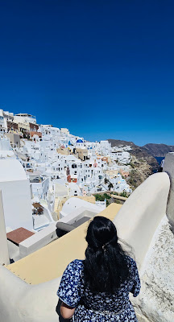

Two of Greece's most beloved islands — Santorini for its sunsets and caldera views, Mykonos for its energy and beaches.
Santorini
A volcanic Greek island famous for its dramatic caldera views, whitewashed villages with blue-domed churches, stunning sunsets, and cliffside towns such as Oia and Fira. It's especially popular for romance, scenic beauty, and wine tourism.

Mykonos
A cosmopolitan Greek island known for its lively nightlife, stylish beach clubs, luxury hotels, and charming old town. Highlights include the Mykonos Windmills and the waterfront district of Little Venice. It's a favorite for beach lovers, social travelers, and anyone seeking a vibrant atmosphere.
Suggested itinerary
Copy my itinerary — add more days for a relaxed pace. Happy travels!
| Leg | Details | Notes |
|---|---|---|
| Flight to Greece | 10 hr flight from Newark | — |
| See Acropolis | — | Greece sightseeing |
| Athens to Santorini | 50 min morning flight | — |
| Stay in Santorini | — | See Oia / Fira |
| Ferry — Santorini to Mykonos | 2 to 3 hrs | See Little Venice |
| Mykonos to Athens | 50 min evening flight | — |
| Athens to Newark | 10 hr 35 min | — |